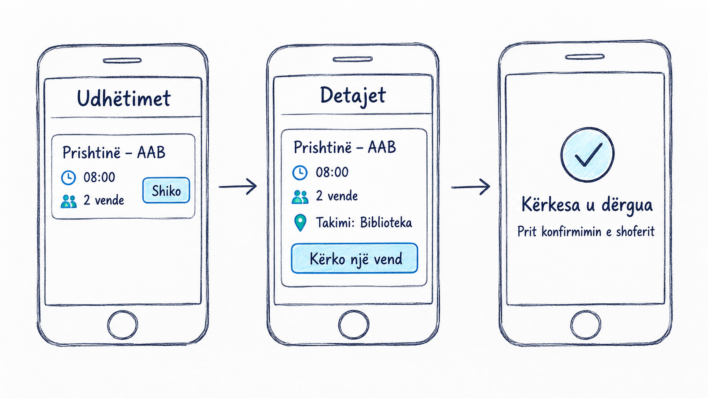

Ushtrimet 2: RideShare në praktikë
24 shtator 2026 · G1 14:45 / G2 18:00. Çdo seksion është një hap pune në projektor.
1. RideShare — projekti ynë i ushtrimeve
Gjatë semestrit ndërtojmë RideShare hap pas hapi.
Secili student punon në kopjen e vet.
Sot dorëzojmë një plan të shkurtër dhe një skicë.
2. Sot na duhen 90 minuta
20 min kontrolli i mjeteve; 10 min problemi.
15 min skica; 15 min PRD-ja.
10 min prova në çift; 15 min GitHub; 5 min dorëzimi.
3. Kontrolli i mjeteve
Hap fletën e kontrollit nga faqja e javës 2.
Provo mjetet dhe shëno çfarë nuk punon.
Edhe nëse Git nuk është instaluar, dokumentet mund t’i dorëzosh nga shfletuesi.
4. Arta kërkon udhëtim. Dreni ka dy vende.
Arta dëshiron të shkojë në AAB.
Dreni publikon udhëtimin dhe vendet e lira.
Arta kërkon një vend; Dreni e konfirmon.
Kërkesa në pritje nuk është ende rezervim i konfirmuar.
5. Shkruaje problemin me një fjali
Kush ka vështirësi? Çfarë dëshiron të bëjë?
Shpjego si i lidh RideShare shoferin dhe udhëtarin.
Shkruaj me fjalët e tua.
6. Vizato tri ekrane
1. Lista e udhëtimeve.
2. Detajet e udhëtimit.
3. Kërkesa në pritje.
Shto shigjetat dhe rastin kur nuk ka vende. Ruaje foton si skica.jpg ose skica.png.

7. Plotëso PRD-në e shkurtër
Shkarko modelin java-02-model.md dhe ruaje si java-02.md.
Plotëso përdoruesit, ekranet dhe tri veçoritë e para.
Shëno çfarë lëmë për më vonë dhe si e provojmë.
Zëvendëso të gjitha shenjat e plotësimit me përgjigjet e tua.
8. Provoje me kolegun
Thuaji: Gjej një udhëtim për në AAB dhe kërko një vend.
Vëzhgo skicën pa i treguar ku të shtypë.
Ndërroni rolet. Shëno një përmirësim në PRD.
9. Ku i ngarkoj? Në repository-n tim.
Hap udhëzimin “Si dorëzoj?” në faqen e lëndës.
Krijo rideshare-mobile në llogarinë tënde: Public + Add README.
Nëse ke një repository personal, përdor atë.
Mos i ngarko skedarët te repository i profesorit.
10. Ngarko dy skedarët
Në faqen kryesore: Add file → Upload files.
Zgjidh java-02.md dhe skica.jpg ose skica.png.
Kliko Commit changes. Hape secilin skedar për ta kontrolluar.
Për fillim nuk nevojitet push, fork ose Pull Request.
11. Dorëzo linkun dhe lexo raportin
Hap formularin e dorëzimit, zgjidh Java 2.
Vendos linkun kryesor të repository-t tënd.
Kliko Create / Submit new issue. Ruaje faqen.
Raporti automatik shfaqet poshtë; rifresko faqen pas pak.
12. Nëse ka gabim, rregulloje në të njëjtin vend
Ngarko dokumentin e korrigjuar në të njëjtin repository.
Te dorëzimi ekzistues komento vetëm: rikontrollo.
2/2 skedarë është kontroll teknik, jo notë për cilësinë.
Në ushtrimin tjetër vazhdojmë të njëjtin RideShare.